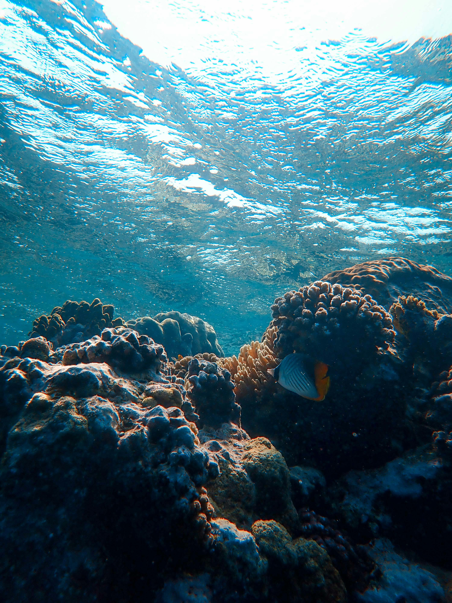

A crescente preocupação com a preservação ambiental e a qualidade dos recursos hídricos tem incentivado o desenvolvimento de tecnologias de monitoramento e controle mais eficientes. Um dos parâmetros cruciais na análise da qualidade da água é o pH, que indica a acidez ou alcalinidade do meio aquático.
O objetivo deste projeto é desenvolver um sistema capaz de medir o pH da água utilizando um microcontrolador Arduino. Esse sistema pode ser utilizado em diversas aplicações, como monitoramento de aquários, análise de qualidade da água em sistemas agrícolas, e controle de processos em laboratórios.
Os dados coletados pelo sensor são transmitidos para um servidor web, onde são exibidos em um site de forma acessível e compreensível para os usuários. Este sistema é ideal para aplicações que exigem controle e monitoramento contínuo da qualidade da água, como aquários, piscinas, e sistemas de tratamento de água.
O pH é uma medida crucial que indica a acidez ou alcalinidade de uma solução. A manutenção do pH adequado é essencial para a saúde de organismos vivos em aquários, para a eficácia de processos industriais e para a segurança do consumo de água.
- Aquários: Monitoramento contínuo para assegurar um ambiente saudável para peixes e plantas.
- Agricultura: Controle da qualidade da água para irrigação.
- Laboratórios: Análise precisa de amostras para experimentos científicos.
- Tratamento de Água: Garantia de que a água tratada esteja dentro dos padrões de consumo.
- Arduino Uno
- Sensor dht11
- Potenciômetro
- Módulo de Conversão Analógica para Digital (se necessário)
- Fonte de Alimentação
- Resistores e Capacitores para filtragem e ajuste de sinais
- Conectores e fios para as conexões elétricas